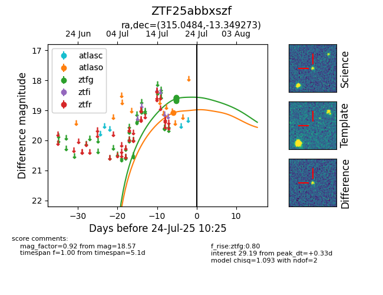

Target ZTF25abbxszf at 2025-07-24 10:25, see:
FINK: fink-portal.org/ZTF25abbxszf
Lasair: lasair-ztf.lsst.ac.uk/objects/ZTF25abbxszf
ALeRCE: alerce.online/object/ZTF25abbxszf
alt names
ZTF25abbxszf (ztf,fink)
coordinates:
equatorial (ra, dec) = (315.0484,-13.34927)
galactic (l, b) = (35.0781,-34.51198)
photometry
last atlaso=19.09, ztfg=18.57
1 atlaso, 6 ztfg detections
